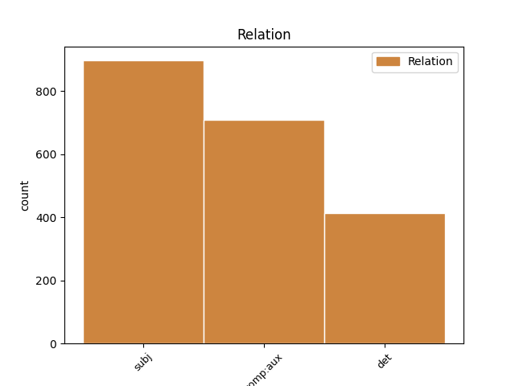
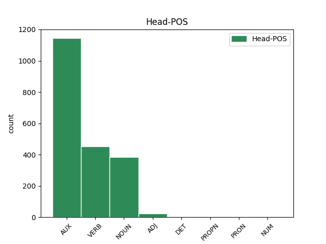
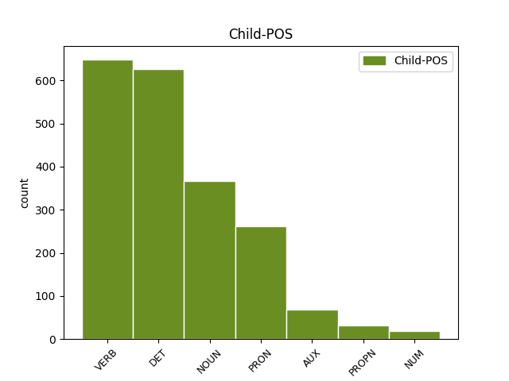

Distribution of features within this leaf



Agreement Rules sorted by frequency.
- When the dependent token is the complement for auxiliary(comp:aux) of the head token, and the dependent token is VERB.
1 reklamo _ _ _ _ 0 _ _ _
2 sem _ _ _ _ 0 _ _ _
3 videla _ _ _ _ 0 _ _ _
4 nisem biti AUX Va-r1s-y Mood=Ind|Number=Sing|Person=1|Polarity=Neg|Tense=Pres|VerbForm=Fin 0 _ _ _
5 pa _ _ _ _ 0 _ _ _
6 še _ _ _ _ 0 _ _ _
7 pila piti VERB Vmpp-sf Aspect=Imp|Gender=Fem|Number=Sing|VerbForm=Part 4 comp:aux _ msd=Ggnd-ez|word=pila
1 aha _ _ _ _ 0 _ _ _
2 kul _ _ _ _ 0 _ _ _
3 eee _ _ _ _ 0 _ _ _
4 čakaj _ _ _ _ 0 _ _ _
5 še _ _ _ _ 0 _ _ _
6 kako kak DET Pq-nsn Case=Nom|Gender=Neut|Number=Sing|PronType=Int 7 det _ msd=Zv-sei|word=kako
7 vprašanje vprašanje NOUN Ncnsn Case=Nom|Gender=Neut|Number=Sing 0 _ _ _
8 eee _ _ _ _ 0 _ _ _
9 to _ _ _ _ 0 _ _ _
10 pa _ _ _ _ 0 _ _ _
11 eee _ _ _ _ 0 _ _ _
12 če _ _ _ _ 0 _ _ _
13 če _ _ _ _ 0 _ _ _
14 nabavim _ _ _ _ 0 _ _ _
15 to _ _ _ _ 0 _ _ _
16 imate _ _ _ _ 0 _ _ _
17 k _ _ _ _ 0 _ _ _
18 [gap] _ _ _ _ 0 _ _ _
19 kako _ _ _ _ 0 _ _ _
20 je _ _ _ _ 0 _ _ _
21 tako _ _ _ _ 0 _ _ _
22 zdaj _ _ _ _ 0 _ _ _
23 ena _ _ _ _ 0 _ _ _
24 cena _ _ _ _ 0 _ _ _
25 za _ _ _ _ 0 _ _ _
26 en _ _ _ _ 0 _ _ _
27 mesec _ _ _ _ 0 _ _ _
28 če _ _ _ _ 0 _ _ _
29 bi _ _ _ _ 0 _ _ _
30 jaz _ _ _ _ 0 _ _ _
31 to _ _ _ _ 0 _ _ _
32 hotel _ _ _ _ 0 _ _ _
33 pač _ _ _ _ 0 _ _ _
34 en _ _ _ _ 0 _ _ _
35 mesec _ _ _ _ 0 _ _ _
36 hotel _ _ _ _ 0 _ _ _
37 to _ _ _ _ 0 _ _ _
38 jest _ _ _ _ 0 _ _ _
39 ? _ _ _ _ 0 _ _ _
1 aha _ _ _ _ 0 _ _ _
2 kul _ _ _ _ 0 _ _ _
3 eee _ _ _ _ 0 _ _ _
4 čakaj _ _ _ _ 0 _ _ _
5 še _ _ _ _ 0 _ _ _
6 kako _ _ _ _ 0 _ _ _
7 vprašanje _ _ _ _ 0 _ _ _
8 eee _ _ _ _ 0 _ _ _
9 to _ _ _ _ 0 _ _ _
10 pa _ _ _ _ 0 _ _ _
11 eee _ _ _ _ 0 _ _ _
12 če _ _ _ _ 0 _ _ _
13 če _ _ _ _ 0 _ _ _
14 nabavim _ _ _ _ 0 _ _ _
15 to _ _ _ _ 0 _ _ _
16 imate _ _ _ _ 0 _ _ _
17 k _ _ _ _ 0 _ _ _
18 [gap] _ _ _ _ 0 _ _ _
19 kako _ _ _ _ 0 _ _ _
20 je biti VERB Va-r3s-n Mood=Ind|Number=Sing|Person=3|Polarity=Pos|Tense=Pres|VerbForm=Fin 0 _ _ _
21 tako _ _ _ _ 0 _ _ _
22 zdaj _ _ _ _ 0 _ _ _
23 ena _ _ _ _ 0 _ _ _
24 cena cena NOUN Ncfsn Case=Nom|Gender=Fem|Number=Sing 20 subj _ msd=Sozei|word=cena
25 za _ _ _ _ 0 _ _ _
26 en _ _ _ _ 0 _ _ _
27 mesec _ _ _ _ 0 _ _ _
28 če _ _ _ _ 0 _ _ _
29 bi _ _ _ _ 0 _ _ _
30 jaz _ _ _ _ 0 _ _ _
31 to _ _ _ _ 0 _ _ _
32 hotel _ _ _ _ 0 _ _ _
33 pač _ _ _ _ 0 _ _ _
34 en _ _ _ _ 0 _ _ _
35 mesec _ _ _ _ 0 _ _ _
36 hotel _ _ _ _ 0 _ _ _
37 to _ _ _ _ 0 _ _ _
38 jest _ _ _ _ 0 _ _ _
39 ? _ _ _ _ 0 _ _ _
1 ja _ _ _ _ 0 _ _ _
2 včeraj _ _ _ _ 0 _ _ _
3 zjutraj _ _ _ _ 0 _ _ _
4 je _ _ _ _ 0 _ _ _
5 prišel _ _ _ _ 0 _ _ _
6 ko _ _ _ _ 0 _ _ _
7 mene jaz PRON Pp1-sg Case=Gen|Number=Sing|Person=1|PronType=Prs 8 subj _ msd=Zop-er|word=mene
8 ni biti AUX Va-r3s-y Mood=Ind|Number=Sing|Person=3|Polarity=Neg|Tense=Pres|VerbForm=Fin 0 _ _ _
9 bilo _ _ _ _ 0 _ _ _
1 od _ _ _ _ 0 _ _ _
2 fructala _ _ _ _ 0 _ _ _
3 voda _ _ _ _ 0 _ _ _
4 samo _ _ _ _ 0 _ _ _
5 da _ _ _ _ 0 _ _ _
6 pač _ _ _ _ 0 _ _ _
7 eee _ _ _ _ 0 _ _ _
8 z _ _ _ _ 0 _ _ _
9 okusom _ _ _ _ 0 _ _ _
10 ampak _ _ _ _ 0 _ _ _
11 da _ _ _ _ 0 _ _ _
12 ni biti VERB Va-r3s-y Mood=Ind|Number=Sing|Person=3|Polarity=Neg|Tense=Pres|VerbForm=Fin 0 _ _ _
13 nič nič DET Pz-nsn Case=Nom|Gender=Neut|Number=Sing|PronType=Neg 12 subj _ msd=Zl-sei|word=nč
14 drugega _ _ _ _ 0 _ _ _
15 kakor _ _ _ _ 0 _ _ _
16 sama _ _ _ _ 0 _ _ _
17 voda _ _ _ _ 0 _ _ _
18 pa _ _ _ _ 0 _ _ _
19 sadje _ _ _ _ 0 _ _ _
1 no _ _ _ _ 0 _ _ _
2 poglejte _ _ _ _ 0 _ _ _
3 eee _ _ _ _ 0 _ _ _
4 ni _ _ _ _ 0 _ _ _
5 možno _ _ _ _ 0 _ _ _
6 na _ _ _ _ 0 _ _ _
7 vse _ _ _ _ 0 _ _ _
8 odgovarjati _ _ _ _ 0 _ _ _
9 ker _ _ _ _ 0 _ _ _
10 je biti AUX Va-r3s-n Mood=Ind|Number=Sing|Person=3|Polarity=Pos|Tense=Pres|VerbForm=Fin 0 _ _ _
11 bilo biti AUX Va-p-sn Gender=Neut|Number=Sing|VerbForm=Part 10 comp:aux _ msd=Gp-d-es|word=blo
12 izrečeno _ _ _ _ 0 _ _ _
13 veliko _ _ _ _ 0 _ _ _
14 stvari _ _ _ _ 0 _ _ _
15 ki _ _ _ _ 0 _ _ _
16 eee _ _ _ _ 0 _ _ _
17 ne _ _ _ _ 0 _ _ _
18 držijo _ _ _ _ 0 _ _ _
19 eee _ _ _ _ 0 _ _ _
20 jaz _ _ _ _ 0 _ _ _
21 sem _ _ _ _ 0 _ _ _
22 videl _ _ _ _ 0 _ _ _
23 oziroma _ _ _ _ 0 _ _ _
24 vidim _ _ _ _ 0 _ _ _
25 veliko _ _ _ _ 0 _ _ _
26 šaljivcev _ _ _ _ 0 _ _ _
27 tukaj _ _ _ _ 0 _ _ _
28 med _ _ _ _ 0 _ _ _
29 nami _ _ _ _ 0 _ _ _
1 eee _ _ _ _ 0 _ _ _
2 o _ _ _ _ 0 _ _ _
3 [gap] _ _ _ _ 0 _ _ _
4 eee _ _ _ _ 0 _ _ _
5 italijani Italijan PROPN Npmpn Case=Nom|Gender=Masc|Number=Plur 6 subj _ msd=Slmmi|word=Italijani
6 imajo imeti VERB Vmpr3p-n Aspect=Imp|Mood=Ind|Number=Plur|Person=3|Polarity=Pos|Tense=Pres|VerbForm=Fin 0 _ _ _
7 to _ _ _ _ 0 _ _ _
8 dobro _ _ _ _ 0 _ _ _
9 narejeno _ _ _ _ 0 _ _ _
10 oni _ _ _ _ 0 _ _ _
11 imajo _ _ _ _ 0 _ _ _
12 vse _ _ _ _ 0 _ _ _
13 proge _ _ _ _ 0 _ _ _
14 ko _ _ _ _ 0 _ _ _
15 ti _ _ _ _ 0 _ _ _
16 prideš _ _ _ _ 0 _ _ _
17 ko _ _ _ _ 0 _ _ _
18 si _ _ _ _ 0 _ _ _
19 kupiš _ _ _ _ 0 _ _ _
20 smučarsko _ _ _ _ 0 _ _ _
21 karto _ _ _ _ 0 _ _ _
22 ne _ _ _ _ 0 _ _ _
23 je _ _ _ _ 0 _ _ _
24 to _ _ _ _ 0 _ _ _
25 vse _ _ _ _ 0 _ _ _
26 s _ _ _ _ 0 _ _ _
27 številkami _ _ _ _ 0 _ _ _
28 označeno _ _ _ _ 0 _ _ _
1 ker _ _ _ _ 0 _ _ _
2 imaš _ _ _ _ 0 _ _ _
3 na _ _ _ _ 0 _ _ _
4 na _ _ _ _ 0 _ _ _
5 spletni _ _ _ _ 0 _ _ _
6 strani _ _ _ _ 0 _ _ _
7 imaš _ _ _ _ 0 _ _ _
8 napisana _ _ _ _ 0 _ _ _
9 dva _ _ _ _ 0 _ _ _
10 podatka _ _ _ _ 0 _ _ _
11 en en NUM Mlpmsn Case=Nom|Gender=Masc|Number=Sing|NumForm=Word|NumType=Card 12 subj _ msd=Kbzmei|word=en
12 je biti VERB Va-r3s-n Mood=Ind|Number=Sing|Person=3|Polarity=Pos|Tense=Pres|VerbForm=Fin 0 _ _ _
13 za _ _ _ _ 0 _ _ _
14 šestdeset _ _ _ _ 0 _ _ _
15 dni _ _ _ _ 0 _ _ _
1 in _ _ _ _ 0 _ _ _
2 da _ _ _ _ 0 _ _ _
3 te _ _ _ _ 0 _ _ _
4 včasih _ _ _ _ 0 _ _ _
5 prav _ _ _ _ 0 _ _ _
6 kaj _ _ _ _ 0 _ _ _
7 šokira šokirati VERB Vmbr3s Mood=Ind|Number=Sing|Person=3|Tense=Pres|VerbForm=Fin 0 _ _ _
8 [gap] _ _ _ _ 0 _ _ _
9 kaj _ _ _ _ 0 _ _ _
10 kaj _ _ _ _ 0 _ _ _
11 ti _ _ _ _ 0 _ _ _
12 reče reči VERB Vmer3s Aspect=Perf|Mood=Ind|Number=Sing|Person=3|Tense=Pres|VerbForm=Fin 7 subj _ msd=Ggdste|word=reče
13 recimo _ _ _ _ 0 _ _ _
14 [gap] _ _ _ _ 0 _ _ _
1 skratka _ _ _ _ 0 _ _ _
2 dogajal dogajati VERB Vmpp-sm Aspect=Imp|Gender=Masc|Number=Sing|VerbForm=Part 0 _ _ _
3 se _ _ _ _ 0 _ _ _
4 je biti AUX Va-r3s-n Mood=Ind|Number=Sing|Person=3|Polarity=Pos|Tense=Pres|VerbForm=Fin 2 subj _ msd=Gp-ste-n|word=je
5 eee _ _ _ _ 0 _ _ _
6 galaktičen _ _ _ _ 0 _ _ _
7 kanibalizem _ _ _ _ 0 _ _ _
Disagree Examples:
1 no _ _ _ _ 0 _ _ _
2 razlogov razlog NOUN Ncmpg Case=Gen|Gender=Masc|Number=Plur 8 subj _ msd=Sommr|word=razlogov
3 za _ _ _ _ 0 _ _ _
4 smeh _ _ _ _ 0 _ _ _
5 in _ _ _ _ 0 _ _ _
6 dobro _ _ _ _ 0 _ _ _
7 voljo _ _ _ _ 0 _ _ _
8 je biti AUX Va-r3s-n Mood=Ind|Number=Sing|Person=3|Polarity=Pos|Tense=Pres|VerbForm=Fin 0 _ _ _
9 bilo _ _ _ _ 0 _ _ _
10 precej _ _ _ _ 0 _ _ _
11 torej _ _ _ _ 0 _ _ _
12 [name:personal] _ _ _ _ 0 _ _ _
13 je _ _ _ _ 0 _ _ _
14 bil _ _ _ _ 0 _ _ _
15 dobitnik _ _ _ _ 0 _ _ _
16 nagrade _ _ _ _ 0 _ _ _
17 saj _ _ _ _ 0 _ _ _
18 kaj _ _ _ _ 0 _ _ _
19 dosti _ _ _ _ 0 _ _ _
20 ni _ _ _ _ 0 _ _ _
21 mogel _ _ _ _ 0 _ _ _
22 povedati _ _ _ _ 0 _ _ _
23 ker _ _ _ _ 0 _ _ _
24 je _ _ _ _ 0 _ _ _
25 bil _ _ _ _ 0 _ _ _
26 tako _ _ _ _ 0 _ _ _
27 presenečen _ _ _ _ 0 _ _ _
28 tako _ _ _ _ 0 _ _ _
29 da _ _ _ _ 0 _ _ _
30 mogoče _ _ _ _ 0 _ _ _
31 je _ _ _ _ 0 _ _ _
32 še _ _ _ _ 0 _ _ _
33 glavna _ _ _ _ 0 _ _ _
34 stvar _ _ _ _ 0 _ _ _
35 ki _ _ _ _ 0 _ _ _
36 je _ _ _ _ 0 _ _ _
37 povedal _ _ _ _ 0 _ _ _
38 tale _ _ _ _ 0 _ _ _
1 eem _ _ _ _ 0 _ _ _
2 sicer _ _ _ _ 0 _ _ _
3 pa _ _ _ _ 0 _ _ _
4 jaz _ _ _ _ 0 _ _ _
5 mislim _ _ _ _ 0 _ _ _
6 da _ _ _ _ 0 _ _ _
7 še _ _ _ _ 0 _ _ _
8 bo biti VERB Va-f3s-n Mood=Ind|Number=Sing|Person=3|Polarity=Pos|Tense=Fut|VerbForm=Fin 0 _ _ _
9 več _ _ _ _ 0 _ _ _
10 odzivov odziv NOUN Ncmpg Case=Gen|Gender=Masc|Number=Plur 8 subj _ msd=Sommr|word=odzivov
11 glede _ _ _ _ 0 _ _ _
12 na _ _ _ _ 0 _ _ _
13 to _ _ _ _ 0 _ _ _
14 da _ _ _ _ 0 _ _ _
15 je _ _ _ _ 0 _ _ _
16 razstava _ _ _ _ 0 _ _ _
17 komaj _ _ _ _ 0 _ _ _
18 se _ _ _ _ 0 _ _ _
19 začela _ _ _ _ 0 _ _ _
1 jaz jaz PRON Pp1-sn Case=Nom|Number=Sing|Person=1|PronType=Prs 8 subj _ msd=Zop-ei|word=jZ
2 [name:personal] _ _ _ _ 0 _ _ _
3 pa _ _ _ _ 0 _ _ _
4 pa _ _ _ _ 0 _ _ _
5 [name:personal] _ _ _ _ 0 _ _ _
6 pa _ _ _ _ 0 _ _ _
7 [name:personal] _ _ _ _ 0 _ _ _
8 smo biti AUX Va-r1p-n Mood=Ind|Number=Plur|Person=1|Polarity=Pos|Tense=Pres|VerbForm=Fin 0 _ _ _
9 šle _ _ _ _ 0 _ _ _
1 vidite _ _ _ _ 0 _ _ _
2 da _ _ _ _ 0 _ _ _
3 so _ _ _ _ 0 _ _ _
4 se _ _ _ _ 0 _ _ _
5 stvari _ _ _ _ 0 _ _ _
6 nekako _ _ _ _ 0 _ _ _
7 zgostile _ _ _ _ 0 _ _ _
8 zgostile _ _ _ _ 0 _ _ _
9 so _ _ _ _ 0 _ _ _
10 se _ _ _ _ 0 _ _ _
11 pa _ _ _ _ 0 _ _ _
12 relativno _ _ _ _ 0 _ _ _
13 nedavno _ _ _ _ 0 _ _ _
14 se _ _ _ _ 0 _ _ _
15 pravi _ _ _ _ 0 _ _ _
16 kar _ _ _ _ 0 _ _ _
17 dolgo _ _ _ _ 0 _ _ _
18 časa _ _ _ _ 0 _ _ _
19 v _ _ _ _ 0 _ _ _
20 temle _ _ _ _ 0 _ _ _
21 vesolju _ _ _ _ 0 _ _ _
22 v _ _ _ _ 0 _ _ _
23 tej _ _ _ _ 0 _ _ _
24 naši _ _ _ _ 0 _ _ _
25 okolici _ _ _ _ 0 _ _ _
26 naše _ _ _ _ 0 _ _ _
27 galaksije _ _ _ _ 0 _ _ _
28 je _ _ _ _ 0 _ _ _
29 bilo _ _ _ _ 0 _ _ _
30 zelo _ _ _ _ 0 _ _ _
31 tako _ _ _ _ 0 _ _ _
32 živahno _ _ _ _ 0 _ _ _
33 življenje _ _ _ _ 0 _ _ _
34 veliko _ _ _ _ 0 _ _ _
35 stvari stvar NOUN Ncfpg Case=Gen|Gender=Fem|Number=Plur 36 subj _ msd=Sozmr|word=stvari
36 je biti AUX Va-r3s-n Mood=Ind|Number=Sing|Person=3|Polarity=Pos|Tense=Pres|VerbForm=Fin 0 _ _ _
37 noter _ _ _ _ 0 _ _ _
38 padlo _ _ _ _ 0 _ _ _
39 veliko _ _ _ _ 0 _ _ _
40 stvari _ _ _ _ 0 _ _ _
41 je _ _ _ _ 0 _ _ _
42 ven _ _ _ _ 0 _ _ _
43 špricnilo _ _ _ _ 0 _ _ _
44 veliko _ _ _ _ 0 _ _ _
45 je _ _ _ _ 0 _ _ _
46 bilo _ _ _ _ 0 _ _ _
47 tega _ _ _ _ 0 _ _ _
48 da _ _ _ _ 0 _ _ _
49 je _ _ _ _ 0 _ _ _
50 majhna _ _ _ _ 0 _ _ _
51 galaksija _ _ _ _ 0 _ _ _
52 ena _ _ _ _ 0 _ _ _
53 galaksija _ _ _ _ 0 _ _ _
54 pojedla _ _ _ _ 0 _ _ _
55 drugo _ _ _ _ 0 _ _ _
1 vidite _ _ _ _ 0 _ _ _
2 da _ _ _ _ 0 _ _ _
3 so _ _ _ _ 0 _ _ _
4 se _ _ _ _ 0 _ _ _
5 stvari _ _ _ _ 0 _ _ _
6 nekako _ _ _ _ 0 _ _ _
7 zgostile _ _ _ _ 0 _ _ _
8 zgostile _ _ _ _ 0 _ _ _
9 so _ _ _ _ 0 _ _ _
10 se _ _ _ _ 0 _ _ _
11 pa _ _ _ _ 0 _ _ _
12 relativno _ _ _ _ 0 _ _ _
13 nedavno _ _ _ _ 0 _ _ _
14 se _ _ _ _ 0 _ _ _
15 pravi _ _ _ _ 0 _ _ _
16 kar _ _ _ _ 0 _ _ _
17 dolgo _ _ _ _ 0 _ _ _
18 časa _ _ _ _ 0 _ _ _
19 v _ _ _ _ 0 _ _ _
20 temle _ _ _ _ 0 _ _ _
21 vesolju _ _ _ _ 0 _ _ _
22 v _ _ _ _ 0 _ _ _
23 tej _ _ _ _ 0 _ _ _
24 naši _ _ _ _ 0 _ _ _
25 okolici _ _ _ _ 0 _ _ _
26 naše _ _ _ _ 0 _ _ _
27 galaksije _ _ _ _ 0 _ _ _
28 je _ _ _ _ 0 _ _ _
29 bilo _ _ _ _ 0 _ _ _
30 zelo _ _ _ _ 0 _ _ _
31 tako _ _ _ _ 0 _ _ _
32 živahno _ _ _ _ 0 _ _ _
33 življenje _ _ _ _ 0 _ _ _
34 veliko _ _ _ _ 0 _ _ _
35 stvari _ _ _ _ 0 _ _ _
36 je _ _ _ _ 0 _ _ _
37 noter _ _ _ _ 0 _ _ _
38 padlo _ _ _ _ 0 _ _ _
39 veliko _ _ _ _ 0 _ _ _
40 stvari stvar NOUN Ncfpg Case=Gen|Gender=Fem|Number=Plur 41 subj _ msd=Sozmr|word=stvari
41 je biti AUX Va-r3s-n Mood=Ind|Number=Sing|Person=3|Polarity=Pos|Tense=Pres|VerbForm=Fin 0 _ _ _
42 ven _ _ _ _ 0 _ _ _
43 špricnilo _ _ _ _ 0 _ _ _
44 veliko _ _ _ _ 0 _ _ _
45 je _ _ _ _ 0 _ _ _
46 bilo _ _ _ _ 0 _ _ _
47 tega _ _ _ _ 0 _ _ _
48 da _ _ _ _ 0 _ _ _
49 je _ _ _ _ 0 _ _ _
50 majhna _ _ _ _ 0 _ _ _
51 galaksija _ _ _ _ 0 _ _ _
52 ena _ _ _ _ 0 _ _ _
53 galaksija _ _ _ _ 0 _ _ _
54 pojedla _ _ _ _ 0 _ _ _
55 drugo _ _ _ _ 0 _ _ _